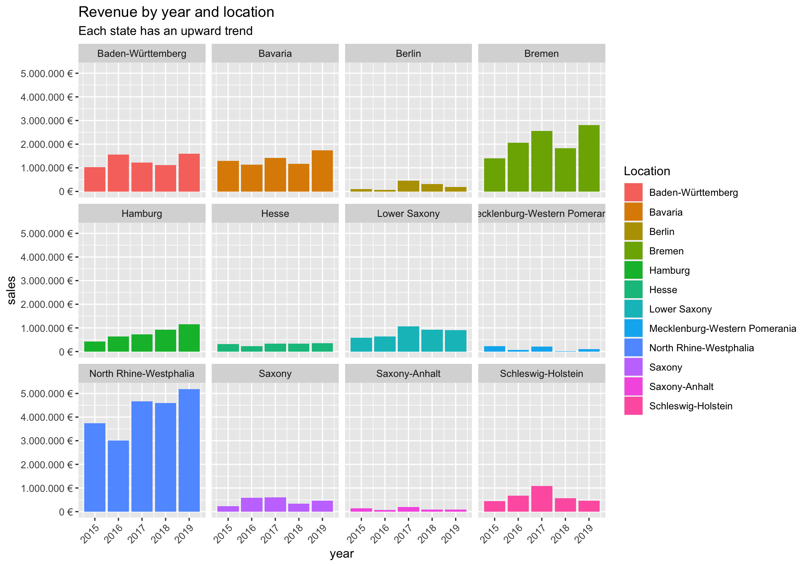
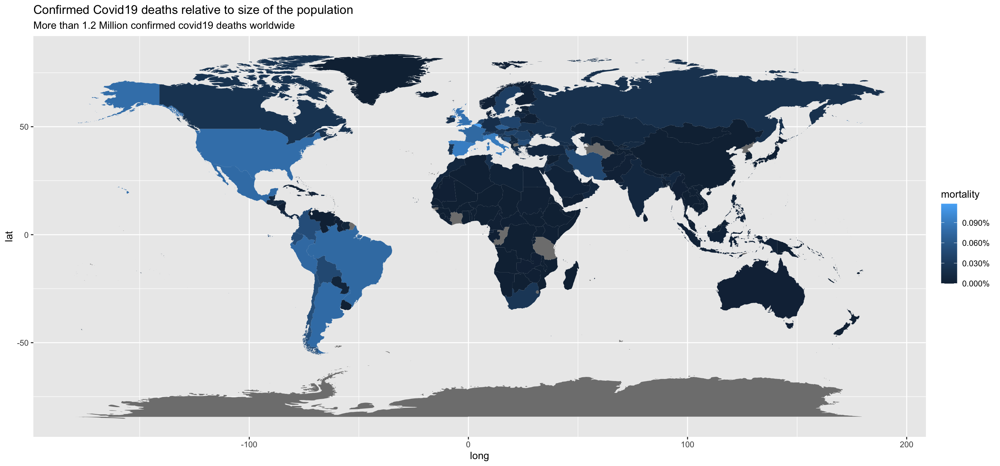

Journal (reproducible report)
Nikitha Baby Kumar
`r Sys.Date()
1 challenge 1 Sales Data analysis
Last compiled: 2020-12-06
Intro to tidyverse
1.1 Sales by location
Analyze the sales by location (state) with a bar plot. Since state and city are multiple features (variables), they should be split. Which state has the highes revenue? Replace your bike_orderlines_wrangled_tbl object with the newly wrangled object (with the columns state and city).
ANSWER:

You can add more headers by adding more hashtags. These won’t be put into the table of contents
1.2 Sales by year and location
Analyze the sales by location and year (facet_wrap). There are 12 states with bike stores.
ANSWER: 
Here’s an even lower level header
2 Challenge 2
Last compiled: 2020-12-06 Data Acquisitin
2.1 get data from API
Get some data via a weather forecast API
ANSWER:
## # A tibble: 10 x 15
## Name Date.time Temperature Wind.Chill Heat.Index Chance.Precipit…
## <chr> <chr> <dbl> <dbl> <lgl> <dbl>
## 1 Hamb… 12/04/20… 0.3 -4.4 NA 0
## 2 Hamb… 12/04/20… 0.4 -4.5 NA 0
## 3 Hamb… 12/04/20… 0.3 -4.8 NA 0
## 4 Hamb… 12/04/20… 0.2 -5 NA 0
## 5 Hamb… 12/04/20… 0.1 -5.2 NA 0
## 6 Hamb… 12/04/20… 0 -5.4 NA 0
## 7 Hamb… 12/04/20… 0 -5.4 NA 0
## 8 Hamb… 12/04/20… -0.1 -5.6 NA 0
## 9 Hamb… 12/04/20… -0.1 -5.4 NA 0
## 10 Hamb… 12/04/20… 0.1 -5.1 NA 0
## # … with 9 more variables: Precipitation <dbl>, Snow <dbl>, Snow.Depth <dbl>,
## # Wind.Speed <dbl>, Wind.Gust <dbl>, Visibility <dbl>, Cloud.Cover <dbl>,
## # Relative.Humidity <dbl>, Conditions <chr>2.2 Web scrapping
# STEP 1: Load Libraries ---
library(fs)
library(tidyverse)
library(magrittr)
library(RSQLite) # Database Connection
library(httr) # Make HTTP Requests
library(glue) # String Interpolation
library(jsonlite) # JSON Conversions
library(stringr) # Wrappers for Common String Operators
library(rvest) # Wrappers to Download, Manipulate HTML/XML
library(purrr) # Functional Programming Toolkit for Rurl_home <- "https://www.rosebikes.com"
# To open links directly from RStudio to inspect them with 'selectorgadget' pass value to xopen() i.e. xopen(url_home)
# Read in the HTML for the entire web page
html_home <- read_html(url_home)
# Web scrape for the families of bikes
rosebike_category_tbl <- html_home %>%
# Get the nodes for the families ...
html_nodes(css = ".main-navigation-category-with-tiles__link") %>%
#html_nodes(xpath = '//*[contains(concat( " ", @class, " " ), concat( " ", "main-navigation-category-with-tiles__link", " " ))]') %>%
# ...and extract the information from href attribute
html_attr('href') %>%
grep(paste("/bikes/sale", collapse = "|"), ., invert = TRUE, value = TRUE) %>%
enframe(name = "position", value = "Category_Path") %>%
mutate(Category_Name = stringr::str_replace(Category_Path,"/bikes/",""))
rosebike_category_tbl## # A tibble: 9 x 3
## position Category_Path Category_Name
## <int> <chr> <chr>
## 1 1 /bikes/mtb mtb
## 2 2 /bikes/road road
## 3 3 /bikes/gravel gravel
## 4 4 /bikes/cyclocross cyclocross
## 5 5 /bikes/fitness fitness
## 6 6 /bikes/hybrid hybrid
## 7 7 /bikes/touring touring
## 8 8 /bikes/urban urban
## 9 9 /bikes/kids kidsrosebike_road_category_url <- str_c(url_home,rosebike_category_tbl$Category_Path[2])
html_road_bike_category <- read_html(rosebike_road_category_url)
rosebike_model_names <- html_road_bike_category %>%
html_nodes(css = '.catalog-category-bikes__title-text') %>%
html_text(trim = TRUE) %>%
enframe(name = "position", value = "Model_Name") %>%
mutate(Category_Name = toupper(rosebike_category_tbl$Category_Name[2]))
rosebike_model_names## # A tibble: 9 x 3
## position Model_Name Category_Name
## <int> <chr> <chr>
## 1 1 PRO SL DISC ROAD
## 2 2 PRO SL ROAD
## 3 3 REVEAL FOUR DISC ROAD
## 4 4 REVEAL FOUR ROAD
## 5 5 REVEAL SIX DISC ROAD
## 6 6 X-LITE FOUR DISC ROAD
## 7 7 X-LITE FOUR ROAD
## 8 8 X-LITE SIX DISC ROAD
## 9 9 X-LITE SIX ROADrosebike_model_prices <- html_road_bike_category %>%
html_nodes(css = '.catalog-category-bikes__price-title') %>%
html_text(trim = TRUE) %>%
str_extract(pattern = "\\d{1,3}\\,?\\d{3}\\.?\\d{1,2}") %>%
parse_number() %>%
# Convert vector to tibble
enframe(name = "position", value = "Price") %>%
# Add a new column to turn the price numbers into a currency format
mutate(Price_Text = scales::dollar(Price, big.mark = ".",
decimal.mark = ",",
prefix = "",
suffix = " €"))
rosebike_model_prices## # A tibble: 9 x 3
## position Price Price_Text
## <int> <dbl> <chr>
## 1 1 1599 1.599 €
## 2 2 1199 1.199 €
## 3 3 2499 2.499 €
## 4 4 2099 2.099 €
## 5 5 3499 3.499 €
## 6 6 2699 2.699 €
## 7 7 2199 2.199 €
## 8 8 3899 3.899 €
## 9 9 3499 3.499 €rosebike_cat_mdl_price_joined <- left_join(rosebike_model_names,rosebike_model_prices)
rosebike_cat_mdl_price_joined## # A tibble: 9 x 5
## position Model_Name Category_Name Price Price_Text
## <int> <chr> <chr> <dbl> <chr>
## 1 1 PRO SL DISC ROAD 1599 1.599 €
## 2 2 PRO SL ROAD 1199 1.199 €
## 3 3 REVEAL FOUR DISC ROAD 2499 2.499 €
## 4 4 REVEAL FOUR ROAD 2099 2.099 €
## 5 5 REVEAL SIX DISC ROAD 3499 3.499 €
## 6 6 X-LITE FOUR DISC ROAD 2699 2.699 €
## 7 7 X-LITE FOUR ROAD 2199 2.199 €
## 8 8 X-LITE SIX DISC ROAD 3899 3.899 €
## 9 9 X-LITE SIX ROAD 3499 3.499 €## # A tibble: 9 x 5
## position Model_Name Category_Name Price Price_Text
## <int> <chr> <chr> <dbl> <chr>
## 1 1 PRO SL DISC ROAD 1599 1.599 €
## 2 2 PRO SL ROAD 1199 1.199 €
## 3 3 REVEAL FOUR DISC ROAD 2499 2.499 €
## 4 4 REVEAL FOUR ROAD 2099 2.099 €
## 5 5 REVEAL SIX DISC ROAD 3499 3.499 €
## 6 6 X-LITE FOUR DISC ROAD 2699 2.699 €
## 7 7 X-LITE FOUR ROAD 2199 2.199 €
## 8 8 X-LITE SIX DISC ROAD 3899 3.899 €
## 9 9 X-LITE SIX ROAD 3499 3.499 €3 Challenge 3
List of the 10 US companies with the most assigned/granted patents.
## # A tibble: 10 x 2
## organization N
## <chr> <int>
## 1 International Business Machines Corporation 7547
## 2 Microsoft Corporation 3165
## 3 Google Inc. 2668
## 4 QUALCOMM Incorporated 2597
## 5 Apple Inc. 2201
## 6 General Electric Company 1873
## 7 Hewlett-Packard Development Company, L.P. 1638
## 8 AT&T INTELLECTUAL PROPERTY I, L.P. 1625
## 9 Intel Corporation 1616
## 10 GM Global Technology Operations LLC 1533List of the top 10 US companies with the most new granted patents for January 2014.
## # A tibble: 10 x 4
## organization num_claims date month
## <chr> <dbl> <date> <int>
## 1 BridgeHealth Medical, Inc. 131 2014-01-21 1
## 2 ACCELERON PHARMA INC. 129 2014-01-14 1
## 3 Covidien LP 125 2014-01-28 1
## 4 Hematologics, Inc. 124 2014-01-14 1
## 5 Signal Perfection, Ltd. 122 2014-01-07 1
## 6 Verizon Business Global LLC 115 2014-01-07 1
## 7 University of Virginia Patent Foundation 113 2014-01-07 1
## 8 BuyMetrics, Inc. 112 2014-01-21 1
## 9 Massachusetts Institute of Technology 106 2014-01-21 1
## 10 Array BioPharma Inc. 104 2014-01-07 1The top 10 companies (worldwide) with the most patents, and the top 5 USPTO tech main classes?
## # A tibble: 10 x 8
## patent_id assignee_id type organization date num_claims mainclass_id
## <chr> <chr> <dbl> <chr> <date> <dbl> <chr>
## 1 8688181 org_ONzMjd… 2 Internation… 2014-04-01 521 505
## 2 8688181 org_ONzMjd… 2 Internation… 2014-04-01 521 505
## 3 8688181 org_ONzMjd… 2 Internation… 2014-04-01 521 505
## 4 8676991 org_adUSPY… 2 QUALCOMM In… 2014-03-18 381 725
## 5 8676991 org_adUSPY… 2 QUALCOMM In… 2014-03-18 381 725
## 6 8676991 org_adUSPY… 2 QUALCOMM In… 2014-03-18 381 725
## 7 RE44963 org_rVU8cQ… 2 Diamond Tec… 2014-06-24 352 703
## 8 RE44963 org_rVU8cQ… 2 Diamond Tec… 2014-06-24 352 703
## 9 RE44963 org_rVU8cQ… 2 Diamond Tec… 2014-06-24 352 702
## 10 RE44963 org_rVU8cQ… 2 Diamond Tec… 2014-06-24 352 356
## # … with 1 more variable: sequence <dbl>4 Challenge 4
Covid data analysis
Map the time course of the cumulative Covid-19 cases

